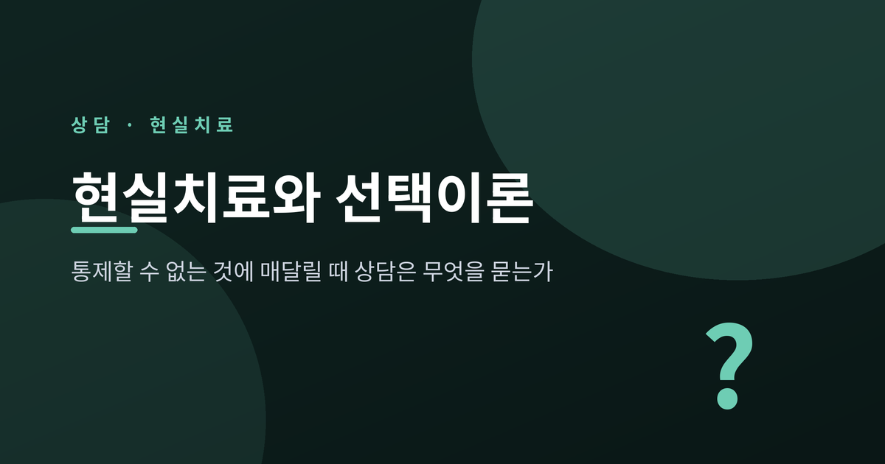
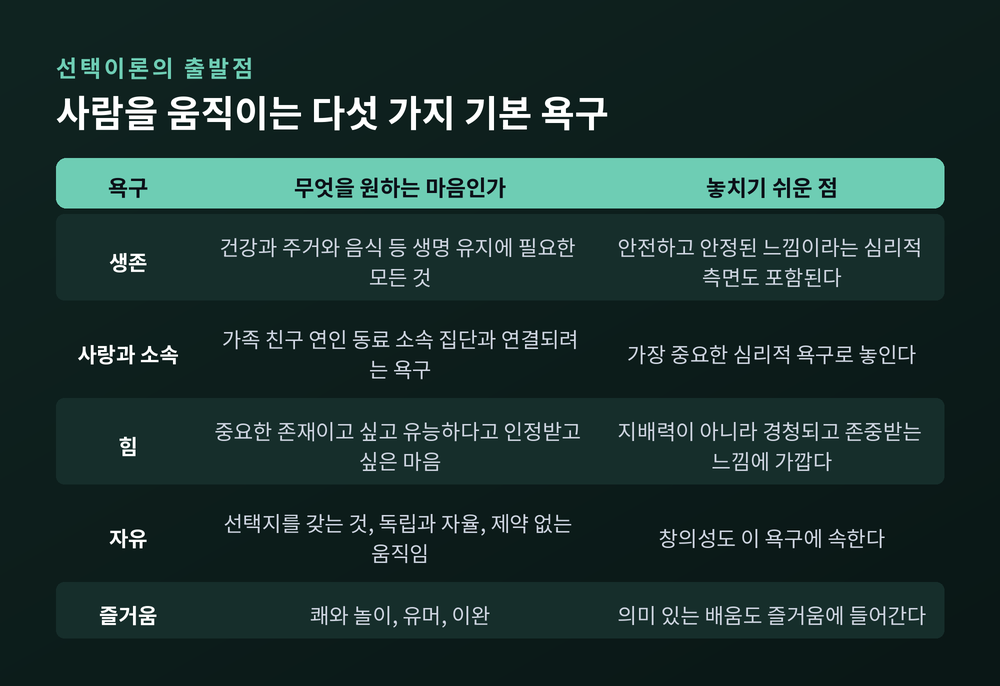
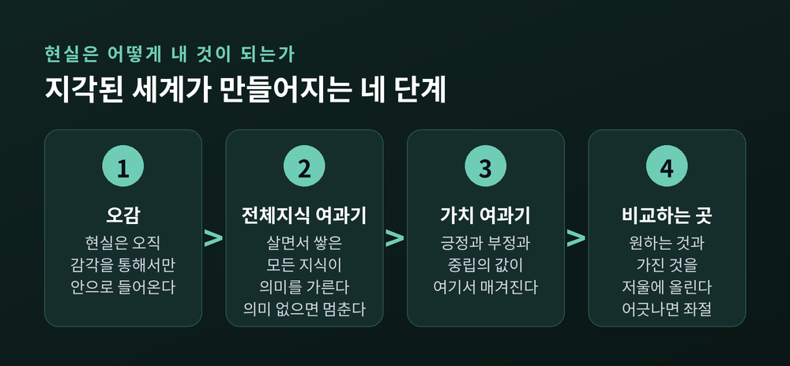
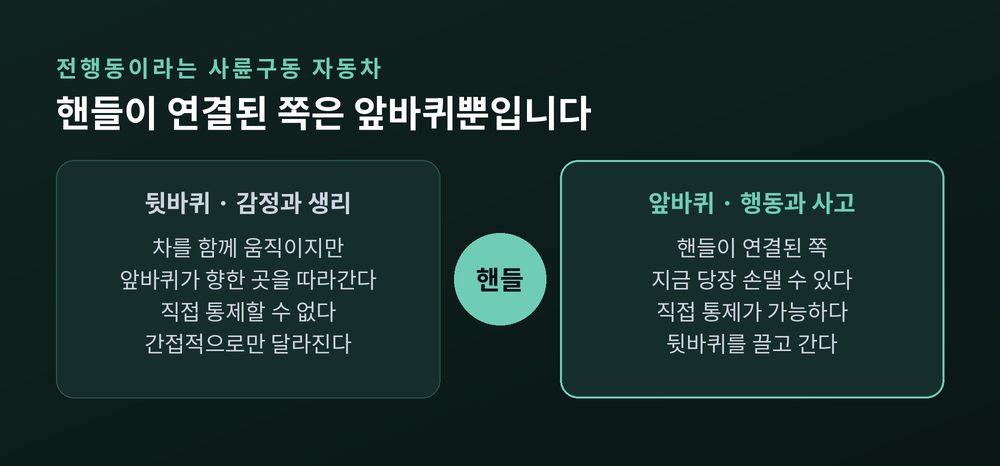
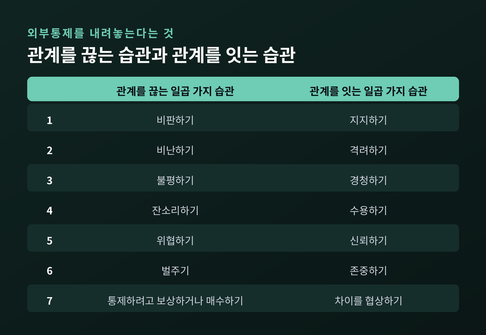
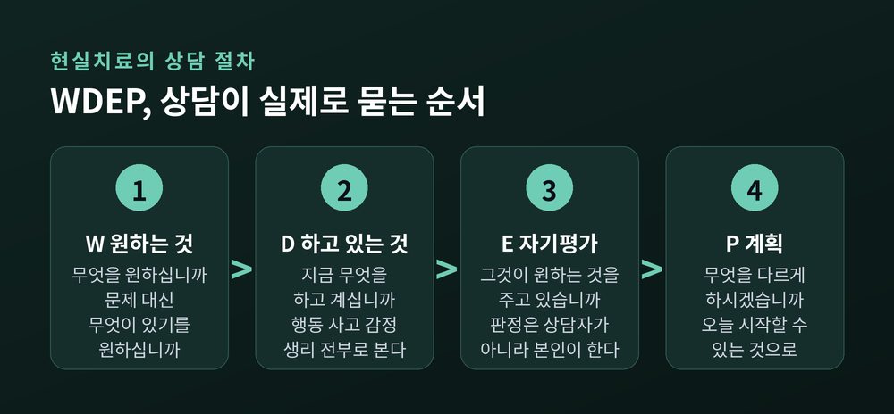
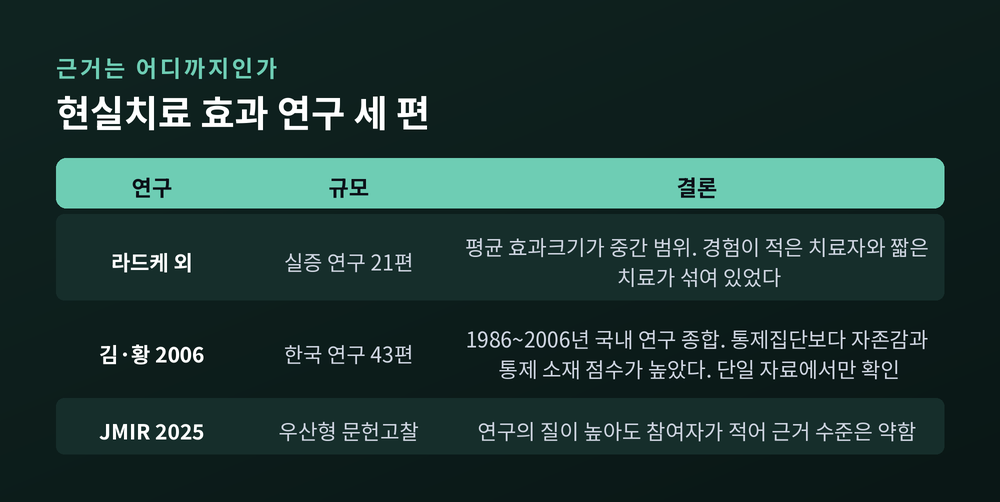

다섯 가지 기본 욕구와 좋은 세계, 전행동 네 바퀴, WDEP 절차와 근거의 한계까지

오늘은 현실치료와 선택이론을 정리해 보려 합니다. 바꿀 수 없는 사람과 상황을 오래 붙들고 있을 때, 이 접근의 상담자는 무엇부터 묻는지 살펴보려 합니다. 이론의 뼈대와 실제 상담 절차, 그리고 근거의 한계까지 함께 다루겠습니다.
먼저 핵심을 세 줄로 정리합니다.
윌리엄 글래서(William Glasser, 1925~2013)는 미국의 정신과 의사입니다. 오하이오에서 태어나 케이스웨스턴리저브대에서 1953년 의학박사 학위를 받았습니다. 처음 받은 학위는 화학공학이었고, 적성이 맞지 않아 심리학으로 학사를 다시 마친 뒤 의학으로 옮겨간 이력이 있습니다.
1965년 그는 『Reality Therapy』를 내놓으며 현실치료를 세상에 알렸습니다. 이때 제시한 축은 세 가지였습니다. 과거가 아니라 현재에 초점을 둘 것. 우리에게는 언제나 선택지가 있다는 사실을 자각할 것. 타인을 통제하는 대신 자기 책임과 자기 통제를 질 것.
1970년대에 그는 윌리엄 T. 파워스의 통제이론 저작을 접하면서 이론의 골격을 정비했습니다. 예전에는 이 틀을 통제이론이라 불렀습니다. 1998년부터는 선택이론이라 부릅니다. 이름을 바꾼 이유는 분명합니다. 통제라는 말이 이 이론이 가장 경계하는 태도를 떠올리게 했기 때문입니다.
지금의 표준적인 구분은 이렇습니다. 선택이론은 사람의 행동을 설명하는 이론이고, 현실치료는 그 이론에 기반해 내담자가 더 나은 선택을 배우도록 돕는 상담 과정입니다.
선택이론은 모든 행동에 목적이 있다고 전제합니다. 지금 하는 모든 일은, 그 순간 가진 정보 안에서 원하는 것을 얻으려는 최선의 시도라는 것입니다. 그리고 그 원함의 뿌리에 다섯 가지 유전적 욕구가 있다고 봅니다.
여기서 오해가 잦은 항목이 '힘'입니다. 남을 눌러 이기는 지배력이 아닙니다. 윌리엄 글래서 연구소의 공식 설명은 경청되고, 존중받고, 유능하다고 느끼는 것에 훨씬 가깝습니다. 자존감과 무언가를 남기고 싶은 마음도 여기에 포함됩니다.
욕구의 세기는 사람마다 다릅니다. 같은 집에서 자란 형제 사이에서도 다릅니다. 그리고 이 다섯 중에서 사랑과 소속이 가장 중요한 심리적 욕구로 놓입니다. 글래서가 거듭 강조한 것도 그 지점입니다. 배우자, 부모, 자녀, 친구, 동료와의 관계가 어긋나는 일이 개인의 불행에 크게 기여한다는 관찰이었습니다.

이 이론에는 좋은 세계(quality world) 라는 개념이 있습니다. 내가 원하는 모든 것의 심상이 저장되는 마음속 자리입니다. 중요한 사람, 장소, 물건, 가치, 신념이 그 안에 사진처럼 걸립니다.
입장 조건은 단 하나입니다. 나에게 아주 좋게 느껴지고, 다섯 욕구 가운데 하나 이상을 채워줄 것. 사회가 정한 '좋음'의 기준을 통과할 필요는 없습니다. 그래서 남이 보기에 도무지 이해되지 않는 것도 누군가의 좋은 세계에는 버젓이 걸려 있습니다.
서로 충돌하는 그림을 동시에 갖는 일도 흔합니다. 그럴 때 곤경이 생깁니다. 공식 설명은 이렇게 덧붙입니다.
좋은 세계 안에서 살 수 있다면 삶은 완벽하겠지만, 안타깝게도 우리는 거기서 살지 못합니다.
우리가 실제로 사는 곳은 지각된 세계입니다. 현실은 오직 지각 체계를 거쳐서만 경험됩니다. 오감으로 들어온 정보가 살면서 쌓은 모든 지식의 여과기를 지나고, 다시 가치의 여과기를 지나며 긍정과 부정과 중립의 값을 얻습니다. 그래서 지각된 세계는 문화와 원가족과 경험에 따라 크게 갈립니다. 자주 부정확하지만, 당사자에게는 완전히 정확하게 느껴집니다.
그리고 그 사이에 비교하는 곳이 있습니다. 원하는 것과 가진 것을 끊임없이 저울에 올리는 자리입니다. 둘이 얼추 맞으면 편안하고, 어긋나면 좌절이 옵니다. 좌절의 크기는 그 그림이 나에게 얼마나 중요한가에 비례합니다.
상담에서 이 개념이 쓰이는 방식은 담백합니다. 못 견디는 이유를 나약함으로 읽지 않습니다. 그 그림이 그만큼 중요했기 때문이라고 읽습니다.

이 접근에서 행동은 언제나 네 요소가 붙어 있는 덩어리입니다. 이를 전행동(total behavior) 이라 부릅니다. 행동, 사고, 감정, 생리 네 가지입니다.
글래서는 이것을 자동차에 비유했습니다. 앞바퀴는 행동과 사고입니다. 뒷바퀴는 감정과 생리입니다. 핸들은 앞바퀴에만 연결되어 있습니다. 뒷바퀴도 분명히 차를 움직이지만, 앞바퀴가 향한 곳을 따라갑니다.
전륜구동 자동차라는 점이 핵심입니다. 무엇을 하고 어떻게 생각하는지가 어떻게 느끼는지를 끌고 갑니다. 그래서 이 이론의 열 번째 공리는 이렇게 정리됩니다. 모든 전행동은 선택된 것이지만, 직접 통제할 수 있는 것은 행동과 사고 요소뿐이라고요.
여기에 독특한 어법이 따라붙습니다. 전행동은 동사로 표기되고, 가장 눈에 띄는 요소의 이름으로 불립니다. '우울하다'가 아니라 '우울해하기'에 가깝게 부르는 방식입니다. 상태가 아니라 지금 이루어지는 활동으로 놓겠다는 뜻입니다.
이 지점은 강점인 동시에 오해를 부르기도 합니다. 슬픔을 선택했으니 책임지라는 말로 들리면 곤란합니다. 실제 상담에서 이 비유가 하는 일은 훨씬 소박합니다. 지금 당장 손댈 수 있는 바퀴가 어느 쪽인지를 함께 확인하는 것입니다.

글래서가 문제 삼은 것은 개인의 성격이 아니라 널리 퍼진 하나의 심리학이었습니다. 외부통제 심리학입니다. 내 경험과 행동이 운과 상황과 타인 같은 외부 요인에 의해 결정된다는 믿음입니다. 그는 이것을 전 세계 거의 모든 사람이 쓰고 있는 현재의 심리학이라 부르면서, 관계에 파괴적이라고 봤습니다.
그 반대편에 내부통제 심리학이 있습니다. 내 선택과 그 결과에 대해 내가 책임을 진다는 믿음입니다. 선택이론의 실천은 결국 이 전환입니다.
이 전환은 추상적인 결심이 아니라 습관의 교체로 제시됩니다. 관계를 끊는 일곱 가지 습관과, 관계를 잇는 일곱 가지 습관입니다.

관계를 끊는 쪽은 비판하기, 비난하기, 불평하기, 잔소리하기, 위협하기, 벌주기, 그리고 통제하려고 보상하거나 매수하기입니다. 마지막 항목을 그냥 '타인을 통제하기'로 적는 자료도 많습니다.
관계를 잇는 쪽은 지지하기, 격려하기, 경청하기, 수용하기, 신뢰하기, 존중하기, 그리고 차이를 협상하기입니다.
일곱 가지를 외우는 것보다 중요한 것은 이 목록이 향하는 방향입니다. 선택이론의 첫 공리는 내가 통제할 수 있는 유일한 사람은 나 자신이라는 문장이고, 두 번째 공리는 우리가 타인에게 주거나 받을 수 있는 것은 정보뿐이라는 문장입니다. 그리고 세 번째 공리가 이렇게 이어집니다. 오래 지속되는 모든 심리적 문제는 관계의 문제라고요.
현실치료를 상담 절차로 다듬어 널리 알린 사람은 로버트 우볼딩입니다. 그가 만든 틀이 WDEP입니다. 원하는 것(Wants), 하고 있는 것(Doing), 자기평가(Evaluation), 계획(Planning)의 앞글자입니다.

W에서는 원하는 것을 묻습니다. 무엇을 원하십니까. 문제 대신 무엇이 있기를 원하십니까. 당신이 생각하는 좋은 삶과 좋은 관계의 그림은 어떤 모습입니까. 상담에서는 무엇을 얻고 싶으십니까.
D에서는 지금 하고 있는 것을 봅니다. 그것도 네 요소 전부로 봅니다. 지금 무엇을 하고 계십니까. 그렇게 행동할 때 무슨 생각을 하십니까. 그렇게 생각하고 행동할 때 기분은 어떻습니까. 그 생각과 행동이 몸에는 어떤 영향을 줍니까.
E는 이 접근의 심장입니다. 질문은 짧습니다. 지금 하고 있는 그 일이, 원하는 것을 얻는 데 도움이 됩니까. 가고 싶은 방향으로 데려다주고 있습니까. 원하는 그것은 이룰 수 있는 것입니까. 이 일에 얼마나 노력할 준비가 되어 있습니까.
핵심은 이 판정을 상담자가 대신 내리지 않는다는 데 있습니다. 자기평가가 전달 체계의 핵심이고, 상담자는 내담자가 자기 행동의 효과성과 원하는 것의 달성 가능성, 그리고 자신이 지각한 통제 소재가 타당한지를 스스로 따져보도록 돕습니다.
P에서는 계획을 세웁니다. 무엇을 다르게 하거나 다르게 생각할 준비가 되어 있습니까. 지금 바로 시작할 수 있습니까. 그것은 당신의 통제 안에 있습니까.
한 가지 단서를 덧붙여야 합니다. 우볼딩은 WDEP를 하나의 단위로 볼 것을 강조했습니다. 네 글자는 차례로 밟고 지나가는 고립된 계단이 아니라, 서로 영향을 주고받는 하위 체계라는 것입니다. 실제 상담에서는 계획을 세우다 원하는 것이 바뀌고, 자기평가를 하다 하고 있던 일이 새로 보이기도 합니다.
2017년 『Journal of Counseling & Development』에 실린 우볼딩과 동료들의 논문은 이 틀의 실용적 쓸모를 짚었습니다. WDEP 체계가 치료계획의 요건을 채우는 유용한 구조를 제공하며, 상담자가 이미 쓰고 있는 다른 접근에도 무리 없이 통합될 수 있다는 것이었습니다.
현실치료가 말하는 좋은 계획의 조건은 SAMIC3로 요약됩니다. 우볼딩이 정리한 기준입니다.
| 기준 | 뜻 | 지키지 않으면 |
|---|---|---|
| Simple (단순) | 계획이 단순할 것 | 복잡하면 혼란스러워 실행하지 못합니다 |
| Attainable (달성 가능) | 이룰 수 있는 크기일 것 | 이룰 수 없으면 낙담만 남습니다 |
| Measurable (측정 가능) | 됐는지 아닌지 알 수 있을 것 | 진척을 확인할 방법이 없어집니다 |
| Immediate (즉시) | 지금 또는 곧 시작할 수 있을 것 | 시작이 미뤄질수록 동기가 식습니다 |
| Controlled (통제) | 실행이 오직 내 손 안에 있을 것 | 남이 움직여야 하는 계획은 계획이 아닙니다 |
| Committed (헌신) | 본인이 하겠다고 마음먹을 것 | 상담자의 숙제가 되면 지속되지 않습니다 |
| Consistent (지속) | 한 번이 아니라 반복될 것 | 일회성 시도로는 변화가 쌓이지 않습니다 |
마지막 세 개의 C를 무엇으로 풀어 쓰는지는 자료마다 조금씩 다릅니다. 일관성과 내담자 중심, 헌신으로 적는 곳이 있고, 계획자 통제와 헌신, 지속적 평가로 적는 곳이 있습니다. 항목의 내용은 대체로 겹칩니다.
주목할 조건은 다섯 번째입니다. 계획의 실행이 오직 자기 손 안에 있어야 한다는 조항입니다. 이것이 이 접근이 통제 가능성을 다루는 방식입니다. 상대의 반응에 성패가 달린 계획은 애초에 통과되지 않습니다.
학교는 이 접근이 가장 오래 실험된 곳입니다. 글래서는 학급회의를 소통과 문제 해결의 수단으로 중시했고, 글래서 퀄리티 스쿨 모델을 제시했습니다. 학생과 교사가 함께 선택이론을 배우고, 강압에 기반한 학급 운영을 그 기법으로 대체하는 학교입니다. 그 결과 성공의 정의와 성공하려는 욕구가 교사 쪽에서 학생 쪽으로 옮겨갑니다.
그는 전통적인 학교가 하는 일을 '스쿨링'이라 부르며 교육과 구별했습니다. 낮은 성적과 낙제로 강제되는 것, 누구에게도 실제로 쓸모없는 사실을 외우게 하는 것을 스쿨링이라 정의했습니다. 그가 남긴 문장 하나가 이 모델의 취지를 잘 보여줍니다.
교육의 중요한 목적 하나는 모든 학생 안에 평생 학습에 대한 사랑을 기르는 것이지, 그것을 죽이는 것이 아닙니다.
교사의 역할도 다시 정의됩니다. 감독하는 관리가 아니라 이끄는 관리, 곧 리드 매니지먼트입니다. 강압 없는 관계를 먼저 세우고, 교사의 평가에서 학생의 자기평가로 무게를 옮깁니다. 다만 실제로 공식 선언된 글래서 퀄리티 스쿨의 수는 많지 않다는 점도 함께 알아둘 필요가 있습니다.
부부상담에서는 질문의 방향이 눈에 띄게 바뀝니다. 이 접근에서 다루는 것은 관계 안에서 상대가 무엇을 선택하느냐가 아니라, 내가 무엇을 하기로 선택하느냐입니다. 배우자를 어떻게 바꿀 것인가라는 물음이, 내가 지금 쓰고 있는 습관이 일곱 가지 중 어느 쪽인가라는 물음으로 옮겨갑니다. 선택이론 기반 현실치료가 부부의 친밀감과 결혼만족도를 높였다는 연구 보고도 있습니다.
청소년 상담에서도 쓰입니다. 이 접근이 학생의 자기조절과 책임감, 학업 수행에 도움이 됐다는 연구들이 있고, 인터넷 과의존 대학생을 대상으로 한 집단상담 프로그램이 과의존 수준을 낮추고 자존감을 높였다는 보고도 있습니다.
흔한 장면 하나를 일반화해 그려보겠습니다. 매일 밤 자녀 방문 앞에서 목소리를 높이는 부모가 있습니다. 잔소리하기와 위협하기와 벌주기가 차례로 동원됩니다. 이 접근의 상담자는 자녀를 바꿀 방법을 먼저 찾지 않습니다. 무엇을 원하는지 묻고, 지금 무엇을 하고 있는지 함께 보고, 그것이 원하는 것을 가져다주고 있는지를 부모 스스로 판단하게 합니다. 자녀는 통제 밖에 있고, 오늘 밤 내가 문 앞에서 무슨 말을 할지는 통제 안에 있기 때문입니다.
여기서는 균형을 지키는 편이 정직합니다. 이 접근에는 옹호하는 근거와 비판하는 근거가 함께 있습니다.

옹호 쪽 근거부터 봅니다. 라드케와 사프, 패럴이 『International Journal of Reality Therapy』에 발표한 메타분석은 21편의 실증 연구를 종합해, 일부 연구가 경험이 적은 치료자와 짧은 치료 기간을 사용했음에도 평균 효과크기가 중간 범위에 있었다고 보고했습니다. 다만 구체적인 효과크기 수치는 공개 자료에서 확인되지 않습니다.
한국 연구를 모은 메타분석도 있습니다. 김과 황이 2006년 『International Journal of Choice Theory』에 발표한 연구로, 1986년부터 2006년까지 국내에서 수행된 43개 현실치료·선택이론 집단 프로그램을 종합했습니다. 통제집단과 비교했을 때 참여집단이 자존감에서 23퍼센트, 통제 소재에서 28퍼센트 높은 점수를 보였다고 정리됩니다. 이 수치는 한 곳의 자료에서만 확인되므로 그대로 단정하기는 어렵습니다.
비판 쪽도 분명합니다. 2025년 『Journal of Medical Internet Research』에 실린 디지털 중독 개입 우산형 문헌고찰은 현실치료를 포함한 여러 개입을 검토하면서, 방법론적 질이 높게 평가된 경우에도 참여자 수가 적어 근거 수준은 약하다고 판단했습니다.
이론 자체에 대한 비판도 오래됐습니다. 정리하면 네 가지입니다.
한 가지 더 있습니다. 이 접근은 무조건적 긍정적 존중이라는 개념을 그대로 채택하지 않습니다. 상담자는 안전한 환경을 제공하되, 목표에 도움이 되지 않는 행동을 짚어주는 안내자 역할을 합니다. 그래서 상담자와 내담자 사이에 신뢰가 자리 잡지 못하면 이 방법은 쉽게 잔소리로 전락합니다. 좋은 도구일수록 쥐는 손을 가린다는 뜻이기도 합니다.
끝으로 한 마디만 더 드리겠습니다.
이 접근이 가진 미덕은 화려한 통찰이 아니라 질문의 방향에 있습니다. 상대를 어떻게 바꿀 것인가에서, 나는 지금 무엇을 하고 있는가로 물음을 돌려놓는 일. 현실치료가 하는 일은 대체로 그 자리에서 크게 벗어나지 않습니다.
"바꿀 수 없는 것에 쓰는 힘을 거두어, 바꿀 수 있는 한 뼘에 옮겨 놓는 일."
다만 분명히 덧붙이고 싶은 것이 있습니다. 이 글은 현실치료와 선택이론이라는 접근을 소개한 것이지, 스스로를 진단하거나 치료하는 안내서가 아닙니다. 우울과 불안, 중독, 가족과 부부 관계의 어려움처럼 지속되는 어려움을 겪고 계신다면 전문 상담기관이나 상담사, 정신건강의학과 전문의와 상의하시길 권합니다. 혼자 견디는 것보다 훨씬 나은 선택입니다.
바꿀 수 없는 사람 앞에서 무엇을 해야 하느냐고 물으신다면, 저는 이렇게 답하겠습니다. 그 사람을 향해 뻗은 손을 잠시 거두고, 오늘 저녁 내가 할 한 가지부터 정해 보시라고요.